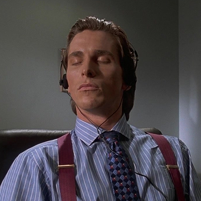

ABOUT ME
 I am 18 years old and recently attended Millenium HighSchool in Tracy. I got my diploma a couple of months ago. Now, I'm currently enrolled in a Code Academy in Stockton. One of my biggest interests is listening to music. I wake up and the first thing I do is play something, usually songs im currently enjoying. If not I skip songs until something im feeling comes up (if that makes sense lol). Not only does music help me focus but is a great outlet for me. Whenever emotions or mood im feeling, music helps me healthily express what I think. Another interest that I do as relaxation is watching youtube or tv.
My Intrest